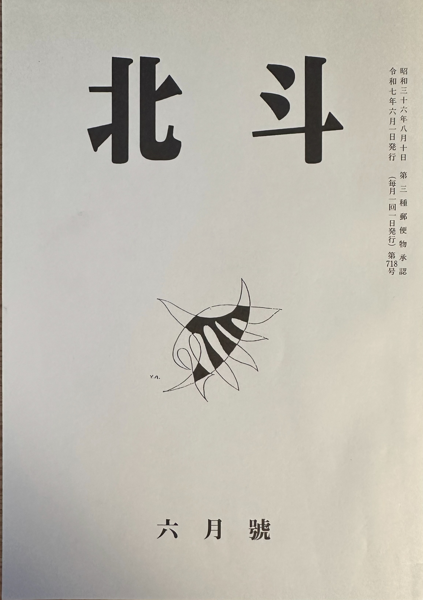

最新号

| ジャンル | 題名 | 著者 | 頁 |
|---|---|---|---|
| 小説 | 光男に起きた奇妙な事件 | 竹中 忍 | 2 |
| 小説 | 最低 | 永野佳奈子 | 42 |
| 小説 | ヨウムのおせっかい（10） | 水田 功 | 48 |
| 小説 | 昭和の残像（五） | 高田杜康 | 52 |
| 小説 | わららか | 藥科眞魚 | 56 |
| 短歌 | 駆除 | 棚橋鏡代 | 46 |
| エッセイ | 居眠り名人 | 寺田 繁 | 60 |
| エッセイ | 山が動くんとです | 池田龍一 | 62 |
| エッセイ | 友人への手紙 2 雑念と雑言（4） | 町井たかゆき | 64 |
| 評論 | 平塚らいてう（25） | ゲンヒロ | 66 |
| 同人欄 | 人工天文台 | 中村ちづ子 他 | 70 |
| 後記 | 編集後記 | 編集部 | 76 |
お知らせ・会合案内
- 2025年6月 NEW 第718号（令和7年6月号）を発行しました。
- 2025年6月22日 会合のご案内：令和7年6月22日（日）13時30分〜、名古屋市中生涯学習センター（地下鉄上前津6番出口より南へ250m）
- 2025年5月 第717号（令和7年5月号）を発行しました。